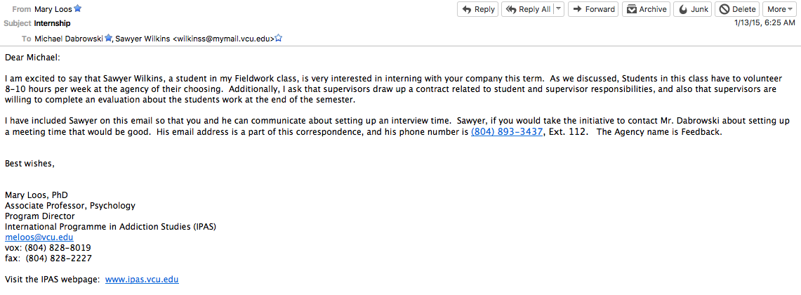

Project Overview:
The marketing research firm I work for was growing, and wanted
what any evolving organization seeks - high-quality candidates
who naturally excel at their work with limited direction.
Granted, we had no trouble recieving dozens of resumes from candidates with
business and marketing backgrounds.
But while our brand of research & strategy work involves
no shortage of marketing concepts, it hinges on the ability
to effectively grasp behavioral analysis techniques and to translate this data into
a cohesive narrative.
Examples of this work can be found here.
Turns out that social science majors (think: sociology, psychology,
anthropology) are significantly more apt to have these qualities based on their training.
I knew this because that's the world myself and many of my colleagues came from.
The problem is: they're often not interested in business (many are attracted
to academic research, non profits, or community engagement roles), or simply are unaware
of business opportunities that mesh well with their background.
I set out to remedy this.
Objectives:
Objective #1: Design, facilitate, and implement a scalable recruitment
process for internships and new hires.
Objective #2: Create a self-sustaining pipeline of quality candidates with the right
backgrounds.
Objective #3: Show them how to become integral employees & on-demand contractors.
Target Audience:
University professors, students, and recent college grads.
Messaging:
There are two clear threads that unite Feedback's business aims with those of social science departments.
Connection #1: The mission to give highly capable individuals professional opportunity.
Connection #2: The aim to improve the experience of individuals by
lifting up their voices, be it through healthcare marketing
or social organization development.
I knew that if these points were conveyed correctly, and professors truly cared about their
students' interests & professional development, they would have no problem
promoting the business opportunities we offer.
Plan:
Leverage existing university connections. I guessed our issue might just
be one of awareness, so I wanted to first reach out to personal mentors from
my psychology department.
I would ask them for introductions to colleagues who might be interested
in spreading the word about our offerings, as well as advising student
internships on the university side.
Create formal advertisements with messaging that speaks directly to those
in the social science world. For instance - as a psychology undergrad, I certainly didn't have my sights set on business - that
was until I came across companies that blended business with what I was learning.
Prep for failure. If my ideas didn't play out as expected (e.g. mentors weren't
interested in sharing the company with students), I would have a process
in place to deal with this.
It would be very much based on a computer science-y "if this, then that" framework.
Execution:
Initial Happenings

Updating my bosses on how the first meetings with high-profile university figures played out.
Things are looking good so far!
Formal Recruitment Messaging
Note the blend of business prominence with social-science speak.
Response to Messaging

Professors were actually hand-selecting students for me. I couldn't imagine
a better scenario.
Results:
Initial Response
Messaging was spot on, and things went off without a hitch. Turns out, social science professors are actually interested in their
students achieving success in the business world - if the opportunity is positioned correctly.
From just a few emails to various department at universities across Virginia,
I had university leaders contact me asking how they could help.
My bosses were extremely thankful for the thoughtful work I put into this project,
and continue to be impressed by amount of quality applicants.
Current Day
We've had countless people go through our internship program,
many of which have become wonderful employees.
My legwork has built up a network of contractors who
we routinely call on for project work when times get busy. This is essential in the unpredictable advertising industry.
I receive a steady stream of interested candidates each month.
And this number only increases when we push out the highly targeted
ads in university depts.
Networks continue to grow in prominence: higher profile universities, departments,
and interested individuals are springing up from more distant locations.
Project Overview:
Picture this: you're hired into an organization and told you are now
in charge of all things marketing. (Awesome!)
You get to direct a network of creative and technical talent
toward creative aims. (Sounds great!)
You are responsible for the ultimate "face" of the brand. (Totally prepared!)
Oh, and by the way - within the first three months,
you have to make the arrangements to attend a few of the
most important conferences for the company. These must go off without a hitch.
And the only other person who can help - the one expert we have at navigating these sorts of engagements - is
moving to Europe in a week.
Actually, this planing should have been started two weeks ago...thanks for taking the reins on this one, Michael!
Objectives:
Objective #1: Plan company attendance at conferences, as a driving aspect of the lead generation strategy.
Objective #2: Prepare logistics (e.g. transportation, shipping, insurance).
Objective #3: Execute on supporting pre/post communications strategies.
Objective #4: Figure out how to automate this process, for future engagements.
Unique Insight:
I quickly realized no formal process had been developed.
All I had was various tidbits of information causally passed
down from my superiors, and they really only ever oversaw the process.
Besides, they had their own all-encompassing tasks like
engineering and business development to handle.
Luckily, my overseas-bound colleague passed on a few insightful tips prior to her departure -
so, there were at least a few ropes to grasp onto before I jumped headfirst into anything:
Order was important - that's to say I might not be able to accomplish
task x
without first doing task y.
Related to this, prioritization was essential.
Some items had to be initiated two months in advance (e.g. design & printing).
Others could only commence the week of the event
(e.g. insurance policy signings).
Costs were to be minimized.
Seriously, conferences are awfully expensive
($7,500 to rent a weekend's worth of carpeting for
a 200 square foot space? $1,500 for a table and chairs
that scream
"We just got back from IKEA"?! Yeah, no thank you -
we'll purchase and bring our own).
Some vendors just suck when it comes to timeline, helpfulness, and negotiating.
Conference administrators can be helpful, up to a point. But they're busy.
Each event has different rules and regulations (i.e. hoops that attendees must be aware of and jump through).
Needless to say - for the first go-round - I knew this would be frustrating, hard work.
But
it would be worth it to plow through and meticulously track my efforts and outcomes,
in a concerted effort to make future iterations as automatic and stress-free as possible.
Plan:
Wrangle the disjointed splattering of notes I've pieced together from colleagues.
Don't be afraid to ask bosses some questions about how things have been done in the past.
Based on this information, plan everything involved with our conference attendance
as best I could.
Track my activities meticulously.
Develop a coherent, checklist-centric guide that will make this task more pleasant in the future.
Use a cloud-based platform (Dropbox Paper) to enable easy collaboration.
Keep the list items just specific enough to effectively automate processes, but no more than necessary.
This is to keep cognitive load low while handling variance
in event-specific rules & regulations.
Execution:
Conference Planning Checklist
Results:
Meticulously tracking my tasks when planning those first conferences
went just as expected - stressful, but manageable. Things got done.
We attended the conferences; they were, by all accounts, a remarkable success.
Prospects loved the display of our new products, we made long-lasting personal connections,
and didn't hit any major logistical snags.
Navigating the trade show setup went from a serious pain in the backside - to a largely effortless,
efficient, and repeatable process.
Jobs to be done are now clearly laid out, yet modifiable for unexpected happenings.
Marketing's creative capabilities are now fully in-use, no longer hampered by logistical nightmares.
I'd estimate that my internal document sparked a 67% increase in happiness when it came to their
day-to-day existence at work.